| |
"Para
cenar: Artaud"
“Para
cenar: Artaud” fue un montaje del Grupo de Gallego realizado durante 4 jornadas
en mayo del ’79 (días 6, 12, 19 y 26) en la sala Espacio
libre del barrio de San Telmo.
Los integrantes del grupo eran
Cecilia Illia, Claudia, Alejandra, Fabiana, Fernando, Horacio, Armus (Mauricio
Kurcbard),
el Negro (Luis María Brand), Marinho (Marco Sadowski), Rochi (Américo), Batata, Cthulhu (Carlos Bravo), Pato (Patricia).
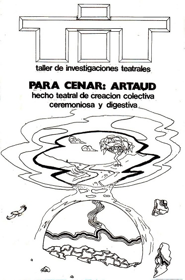
La investigación
Desde su creación a fines del ’78, el
Grupo de Gallego
investigó sobre 3 ejes simultáneamente:
* el lenguaje
de los sueños (pautas de lo onírico, procesos del subconsciente).
* el Teatro de la Crueldad (Artaud).
* la teatralidad de algunos acontecimientos
que vivimos en la realidad: la ceremonia (todos con uno y uno con el más
allá), el rito (cada uno consigo mismo y con el más allá), el juego
(unos contra otros), y la fiesta (todos con todos). Juan ya había abordado esto
un tiempo antes y fue un tema recurrente en varios montajes del TiT. El teatro tradicional desde hace siglos adquirió la forma
ceremonial, donde "todos" se relacionan en forma pasiva con
"unos" (los artistas) y éstos con "el más allá" (el texto
teatral, o el arte en general), así como en una ceremonia religiosa todos se
relacionan con el monje y éste con Dios. O sea que "todos" se relacionan con el arte indirectamente,
solo a través de los artistas, quienes por lo tanto adquieren un rol
sacerdotal. Una forma de romper la ceremonia es incorporando el rito, el juego y
al final la fiesta: "todos con todos".
Se crearon decenas de bloques con pautas resultantes
de la investigación. La idea central (interna al grupo, no explícita para el
público): los actores eran criaturas que convivían y trabajaban en un lugar llamado
"La Oficina Central de Sueños", y su tarea era procesar, ensamblar y
despachar los sueños hacia el soñante. No conocían el exterior.
|
|
Oración
para que venga el sueño (texto de Uviedo):
"Como navaja me
meteré en tus sueños
para que pienses,
para que sientas, para que entiendas.
En forma de navaja me
meteré en tus sueños
para que puedas
comprender al fin; para que puedas.
Para que aprendas el
dolor de los más locos y palpes su sabor.
Como navaja me
meteré en tus sueños.
¿Y si alguien se
despierta?
Ha de dejar de ser
para este sueño.
¡Me meteré! ¡Me
meteré! ¡En forma de navaja me meteré en tus sueños!"
|
|
El
montaje (la imagen muestra el croquis del espacio hecho en esa época por
Cthulhu en su cuaderno)
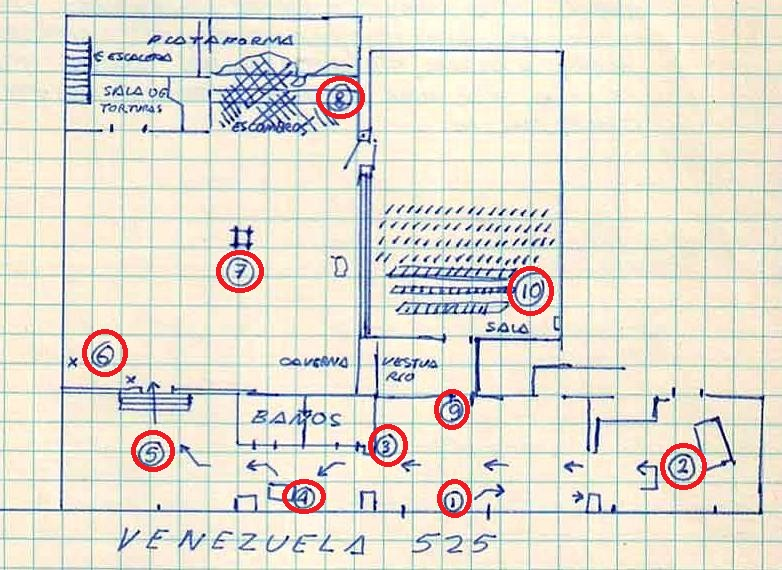
1)
Puerta, entrada al lugar.
2) Venta
de entradas.
3) Se
entrega el Manifiesto del Zangandongo, pidiendo una contribución.
4) Se hace
pasar de a una persona hacia un escritorio donde se le preguntan datos
personales (nombre, nacionalidad, ocupación, edad, estado civil). Se intenta
amedrentar a la gente, separándola de su pareja o acompañantes y haciéndole
sentir un tono militar.
5) Luego
cada uno debe atravesar un ambiente lleno de objetos a oscuras y subir una
escalera.
6) Al
subir la escalera, sorpresivamente se lo palpa de armas y se lo hace esperar en
un espacio amplio lleno de escombros.
7) En ese
espacio, después de haber entrado toda la gente, mientras suena Carmina
Burana, comienza la ceremonia de la vestimenta (un actor distribuye ropa por
el espacio que va sacando de una bolsa) y luego se hacen los ritos (cada actor
se viste según sus propias pautas en un lugar reducido dentro de ese espacio).
Al finalizar, los actores ocupan todo el espacio entre la gente mientras se
apagan las luces.
8) Se
encienden velas que están sobre una viga, luego se encienden otras en todo el
recinto. Gallego hace sonar una campana para que los actores reciten entre la
gente la Oración para que venga el sueño.
9) Se
invita a la gente a volver sobre sus pasos hacia la puerta de la sala, donde se
le entrega un almohadón a cada uno.
10) En la
sala se realiza la mayor parte del montaje. La entrada se hace como
si todos fueran invitados a una gran fiesta; así son recibidos. Luego, a
oscuras, un actor a la vez grita la frase "Yo, Antonin Artaud, soy mi
hijo, mi padre, mi madre y yo". A continuación comienza la secuencia
de bloques, que fue cambiando en las distintas jornadas, pero los más usados
fueron: La cacería, Interiores, Simetría, La búsqueda, Grito ahogado, El
juicio, El masturbatorio, El beso, Niños y drogas, Struktur, Blanco, La nena,
La misa. Algunos bloques incluían pautas de juegos físicamente riesgosos. El final era una
fiesta con el público.
|
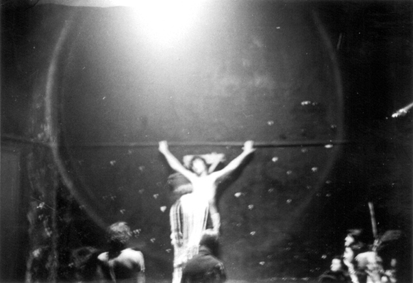
Siempre el último bloque, antes de la fiesta, fue La misa. Marinho
"se colgaba" en la pared (simulaba una autocrucificación muy
meticulosa); Ceci y Batata se mezclaban entre la gente y adoptaban posiciones de
misa, arrodillados, mirando hacia él. Cthulhu pasaba con la bolsa para
ofrendas, pidiendo colaboración a actores y público (con gestos, sin hablar); todos debían poner algo,
o aunque sea hacer el gesto de poner; si alguien se negaba, Marinho se
descolgaba, se presentaba ante esa persona y con gestos adustos, sin emitir
palabra alguna, intimaba al rebelde; después de conseguir su objetivo (que el
intimado pusiera una ofrenda), volvía a colgarse. Una escena que comenzaba de
una forma ceremonial y solemne se iba tornando muy graciosa a partir de las
reacciones de la gente. Era la transición a la fiesta final, para ir saliendo
de climas densos de los bloques anteriores. |
|
Espejos (otro texto de Uviedo, recitado en uno de los
bloques por Cecilia y Luis María)
"Y encontraba que mi
cuerpo abortaba, de pronto,
otros muchos cuerpos
diferentes al mío
que igual se dividían.
Que nadie me era igual, pero
me era.
Que yo no hablaba, que lo
hacía otro cuerpo diferente al mío
pero que yo era aquel que lo
movía.
Que yo era el centro, yo era
el centro, era el centro, centro, centro,
tro, tro, tro, tro, tro.
Por mí vivían, yo era el
culpable de sus muertes.
Yo era el maniático
manejador de cuerpos,
de cuerpos que de pronto se
morían." |
La previa
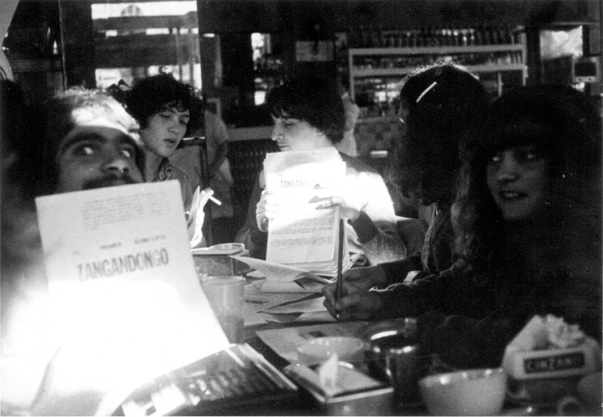
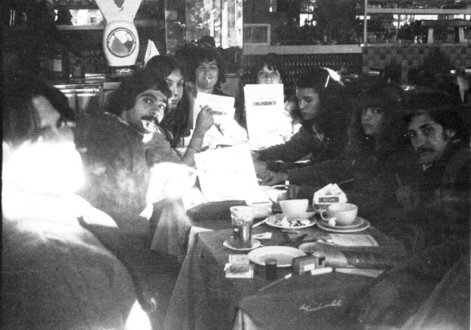
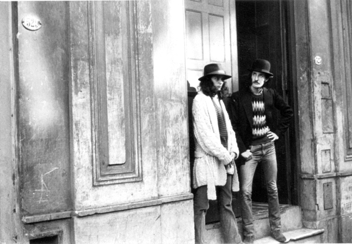
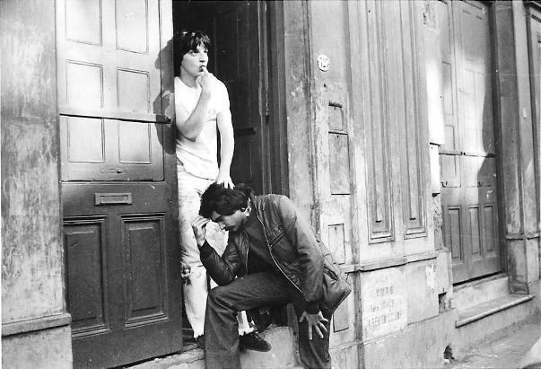
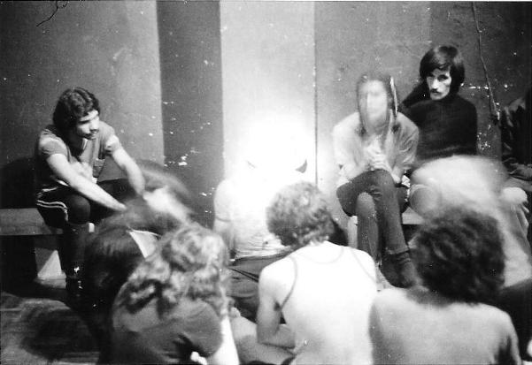
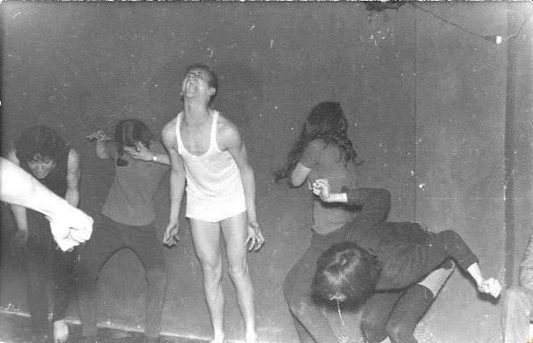
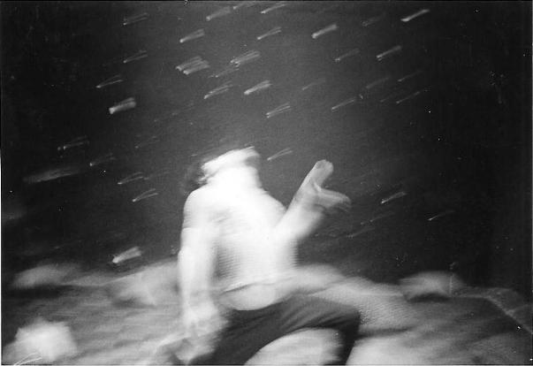
El montaje
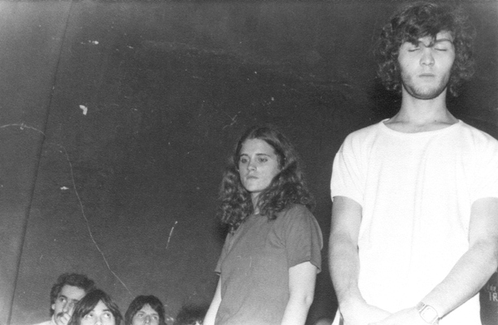
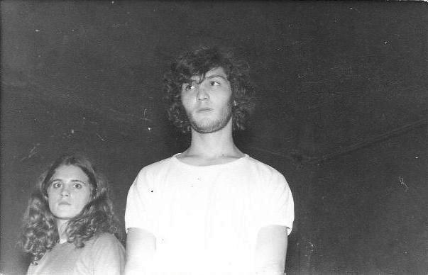
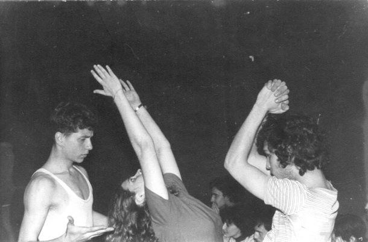
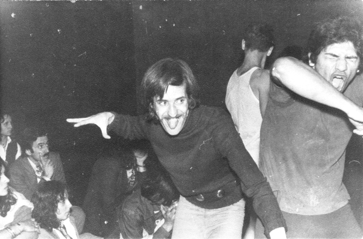
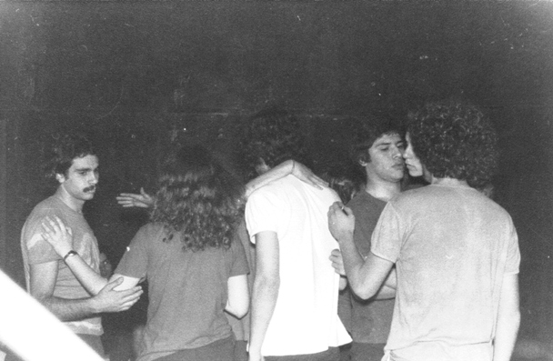
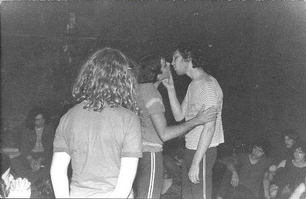
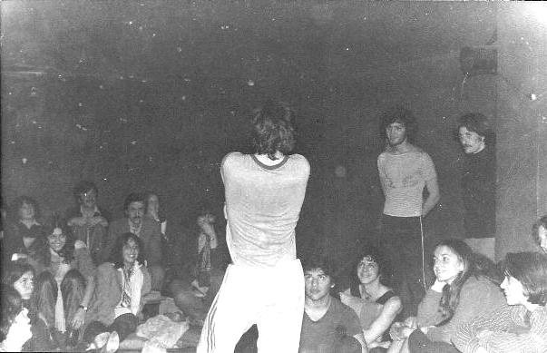
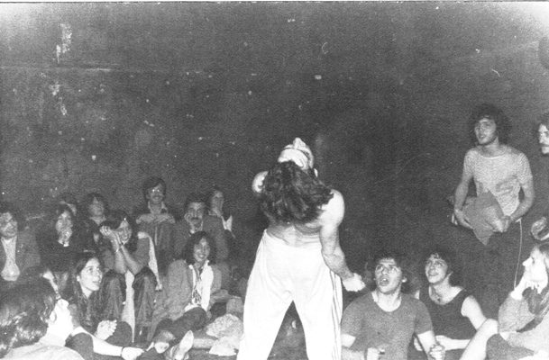
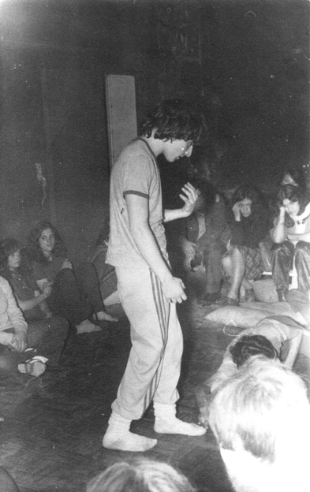 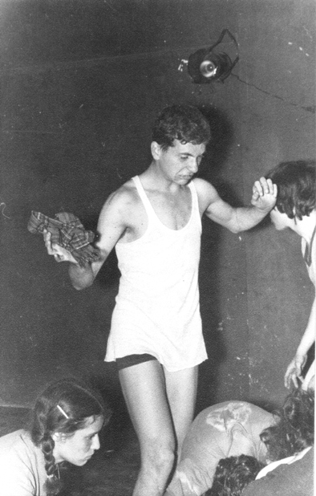
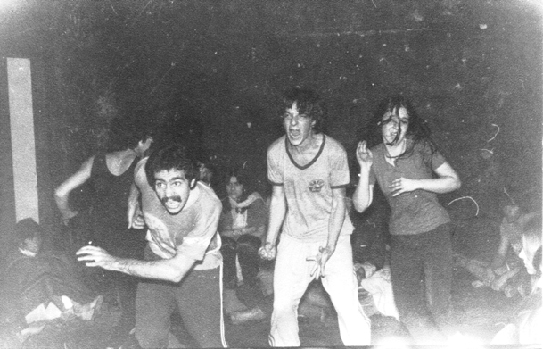
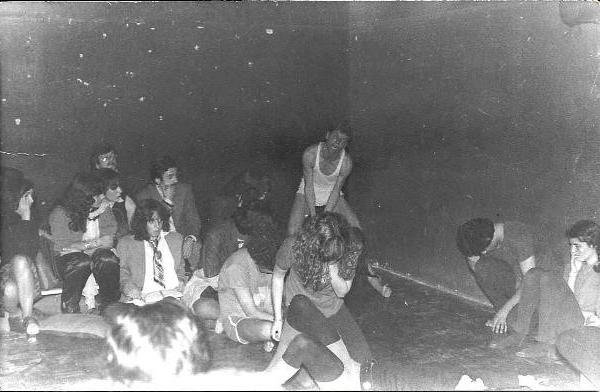
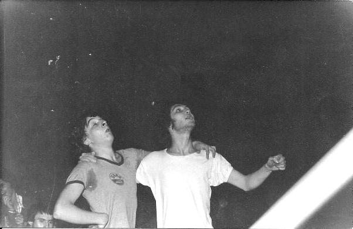
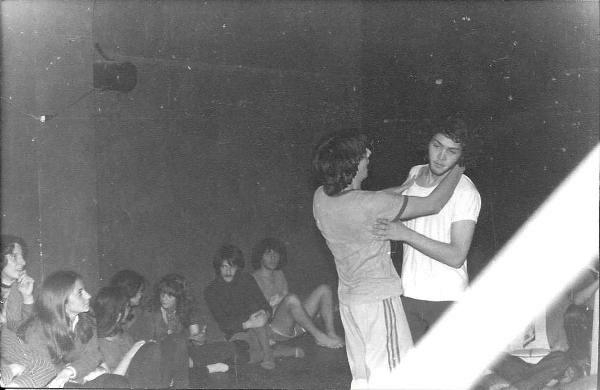
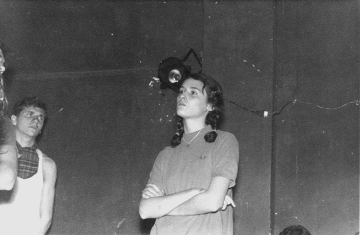
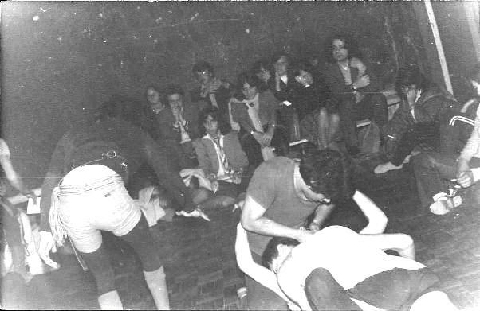 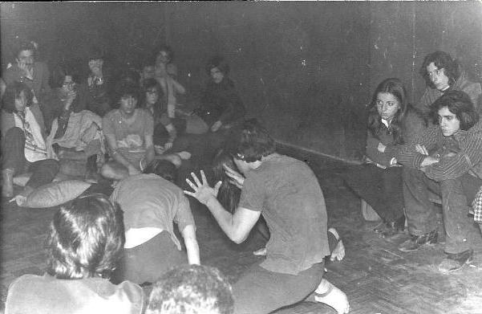
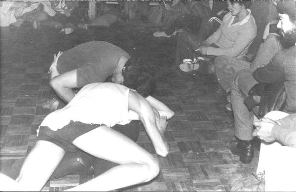 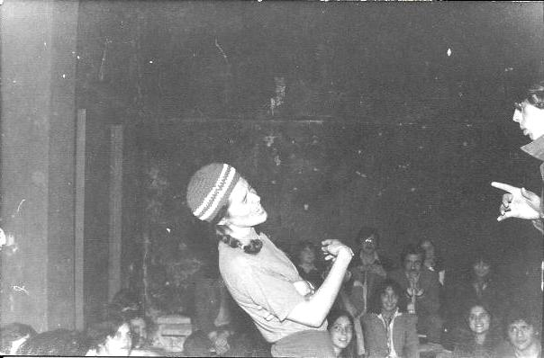
Claudia interactuando con alguien del público.
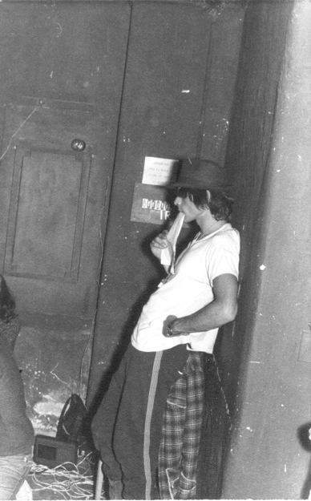
Gallego dirigía desde un rincón de la sala.
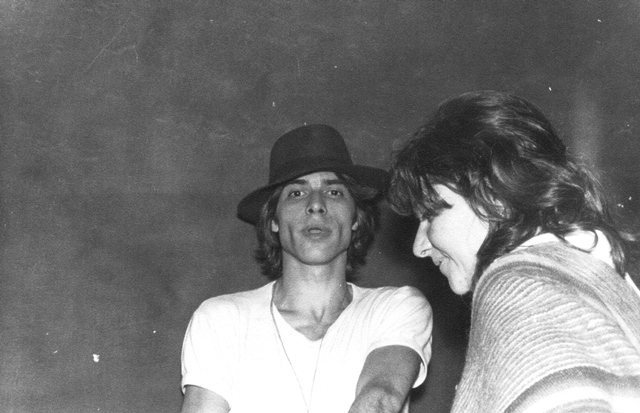
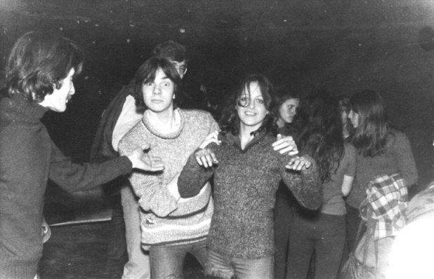
Marta
Gali
saluda después de una de las funciones.

|